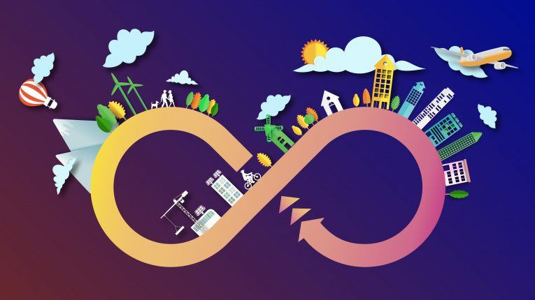

Sobre el proyecto
es un enfoque sostenible que busca minimizar el desperdicio y maximizar la eficiencia en el uso de los recursos. En un proyecto de economía circular, se implementan estrategias como el reciclaje, la reutilización y la reducción de residuos para crear un sistema más circular y menos lineal.
Objetivo
El objetivo es promover la conservación de recursos, reducir la contaminación y fomentar la innovación en el diseño de productos y procesos. Al adoptar la economía circular, se pueden generar beneficios económicos, sociales y ambientales a largo plazo.
Casos de exito de la economia circular
- caso 1: Proyectos e iniciativas circulares implementadas en diferentes organizaciones del país.
- caso 2: Utilización de botellas de plástico, algodón reciclado, neumáticos y redes de pesca para crear productos sostenibles.
- caso 3: Experiencia en financiamiento de inversiones de economía circular en Colombia.

Beneficios de la economía circular
- Beneficios 1: Reducción de la dependencia de las materias primas.
- Beneficios 2: Generación de ventajas económicas, como aumento del PIB, mayor innovación tecnológica y ahorro neto de costes.
- Beneficios 3: Protección del medio ambiente, beneficio para la economía local, fomento del empleo y promoción de la independencia de recursos.
